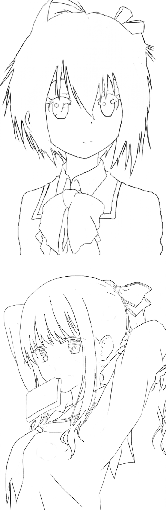
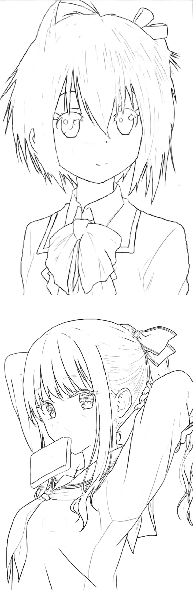

An Efficient Solution to the Erasing Appearance Preservation Problem
Zhicheng Zhang, Zhiyang Xun, Zheng Yu
Abstract
Partially erasing the appearance in an image has been found to enhance the quality of image smoothing. Recent works formulate this approach as an optimization-based EAP problem and propose an iterative method of solving it. We first analyze the main drawback of their method, i.e. the slow running time. Motivated by this analysis, we then propose two methods of initialization that could accelerate the process, end-to-end machine-learning-based style transfer and segment-graph-based image filtering. We demonstrate that our acceleration method achieves similar or, in many cases, better performance while being significantly faster than the original algorithm. To showcase the practicality of our method, we consider the application of the restoration of the painting process, which is to recover the three main middle stages based on only the final painting. Using our method, we believe that this process could be done in almost real-time, which could benefit the art community.
Files
Gallery

